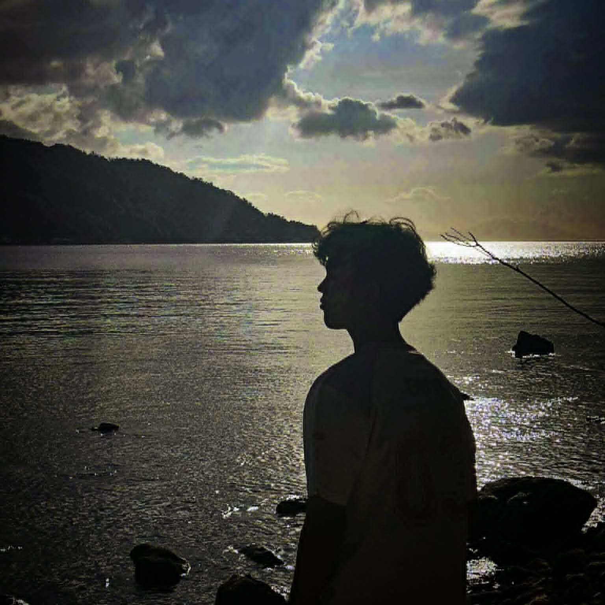

My Skills
Technologies and tools I work with
HTML
CSS
JavaScript
React
Git
Responsive Design
UI/UX Basics
Python
VS Code

A Front-end student developer, with a little bit cyber on life.
I'm Dan Christ John Sandoval — a front‑end developer with a few projects under my belt. I craft clean, responsive interfaces. I'm 20 Years old born in 2006 and currently a 3rd Year BSIT student of BatstateU - The NEU. I live at Poblacion Mabini Batangas. I'm A student full of hope and dignity when it comes to works/project.
Neon Forge is a cyberpunk-themed online PC shop where customers can browse and buy gaming gear like monitors, keyboards, mice, headphones, and system units.
NEON FORGEA fast-paced 2D cyberpunk platformer. Sprint, jump, and deliver the package before the clock runs out.
play nowThe Cyberpunk Aesthetic — High Tech, Low Life

This portfolio breathes the neon-drenched streets of Night City — the iconic setting of Cyberpunk: Edgerunners and Cyberpunk 2077. Every element, from the glitch animations to the cyan/magenta color palette, channels the anime's signature visual identity: high-contrast neon signs reflecting on rain-slicked asphalt, chrome bodies gleaming under holographic ads, the constant hum of corporate oppression and street-level rebellion.

The fighter arena below showcases the core cyberpunk duality: Zan (the human ronin with his straw kasa, red scarf, and three-sword style) vs UNIT-7 (the sleek cyborg with a neon visor and Haki-charged impacts). This mirrors Edgerunners' exploration of humanity's erosion — David's Sandevistan, Maine's chrome overload, Lucy's netrunning. The code doesn't just animate sprites; it stages a philosophical conflict.

Each fighter has an ultimate inspired by the anime's most iconic moments: Purgatory Onigiri (Zan's three-blade cross-slash, echoing the show's kinetic combat choreography) and Galaxy Impact (UNIT-7's Haki-infused ground smash, a nod to the raw physicality of Adam Smasher). These aren't just animations — they're love letters to Trigger's animation mastery.

The always-visible audio dock isn't just a volume slider — it's your Cyberpunk: Edgerunners playlist controller. The BGM channels the show's unforgettable soundtrack: Franz Ferdinand, Dawid Podsiadło, Tasha Baxter, and the pulsing synthwave that scored every heist, every loss, every "I really f***ing love you." Toggle it. Feel it.

The portfolio includes a fully playable 2D platformer: NEON COURIER. Sprint across rooftops, double-jump through holographic billboards, grab the package, hit checkpoints, race the clock. It's a micro-dose of the courier fantasy — David on his bike, weaving through Arasaka checkpoints, the city a blur of magenta and cyan. Built with vanilla JS, canvas, and pure cyberpunk adrenaline.

Every line of this portfolio is written with the same ethos: style over substance? No. Style IS substance. Modular architecture (portfolio.js, fighter.js, game.js, audio.js), CSS custom properties for theming, zero dependencies beyond Font Awesome. The fighter system alone — 500+ lines of SVG animation state machines — proves that vanilla web tech can rival game engines when you treat code like cyberware: optimize, enhance, never compromise.